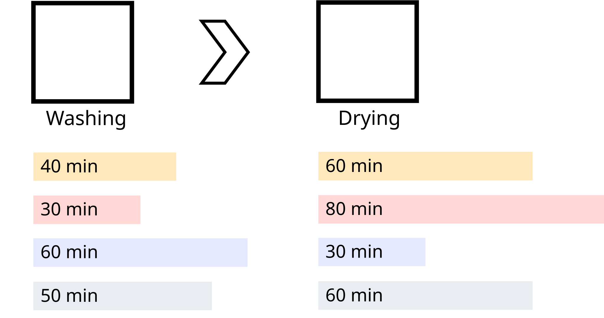
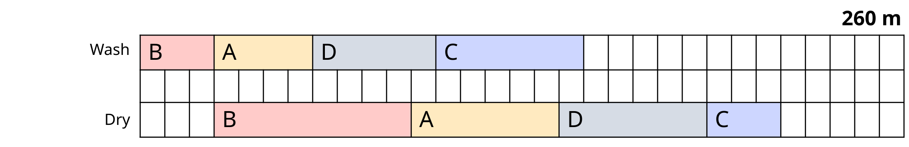
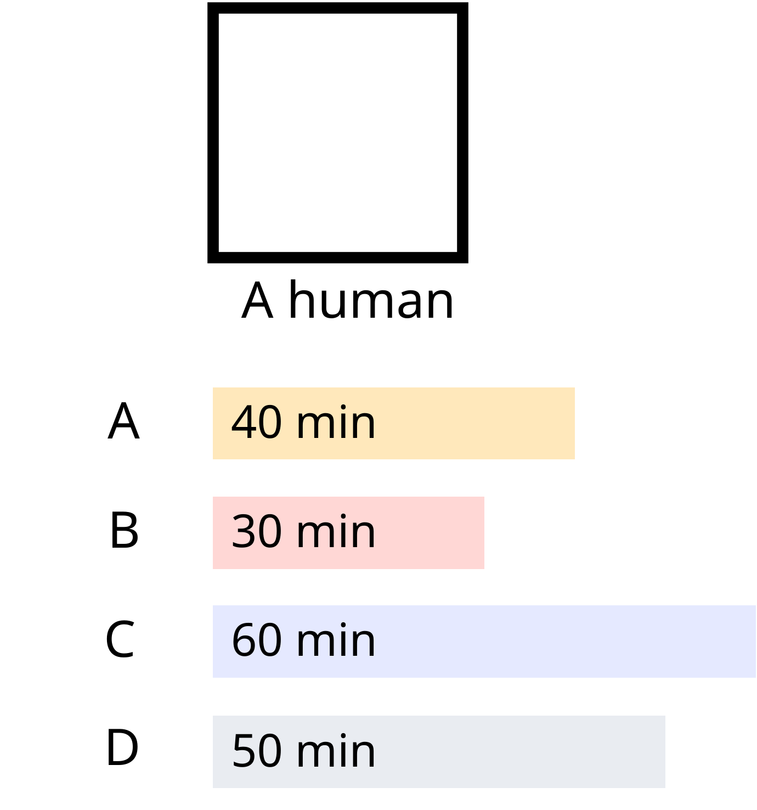
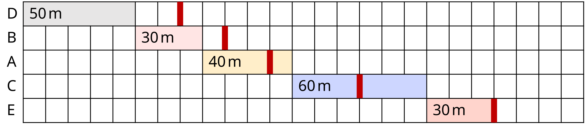
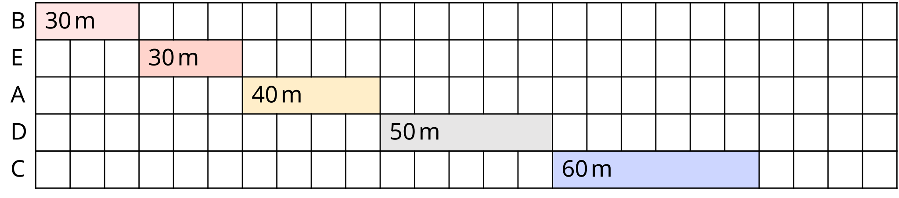
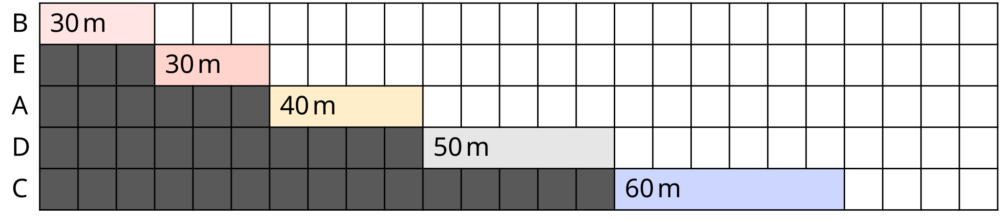
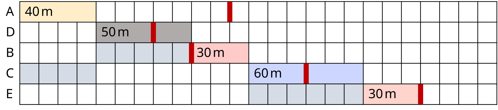
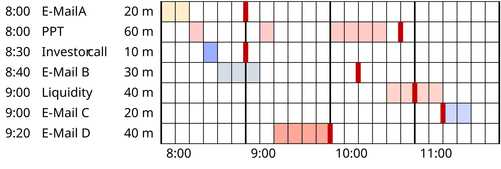
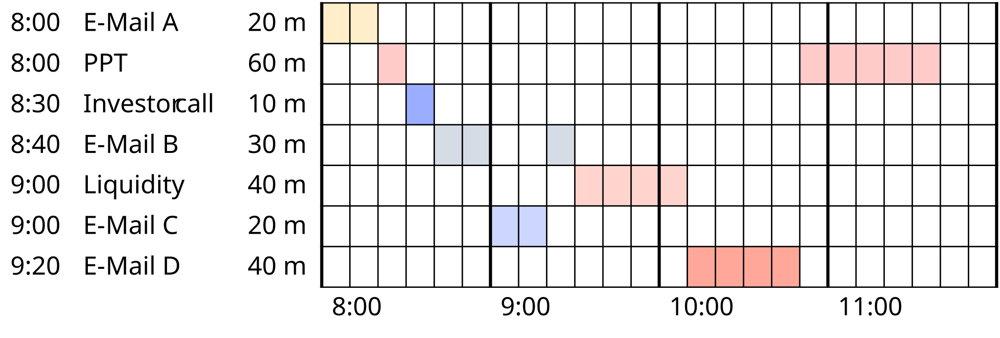
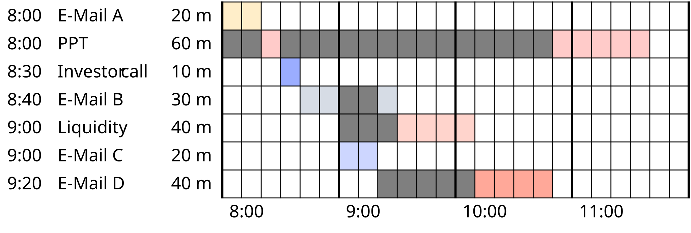

mindmap
root((Task Properties))
Time-Related
Time windows
Deadlines
Start constraints
Deterministic durations
Variable durations
Stochastic durations
Relationship-Based
Predecessor relationships
Successor relationships
Dependencies
Priority levels
Resource constraints
Lecture IV - Scheduling
Programming: Everyday Decision-Making Algorithms
Introduction
Today’s Topic: Scheduling Algorithms
Topic: Understanding scheduling problems and algorithmic solutions for optimal task ordering
. . .
Why this matters: Every day you make scheduling decisions, from organizing your to-do list to managing projects. Today we’ll learn the mathematical algorithms that can optimize these decisions and see how they connect to programming logic.
Today’s Agenda
- Scheduling Fundamentals - Johnson’s Rule and two-machine problems
- Historical Context - How scheduling theory developed
- Core Algorithms - EDD for deadlines, SPT for efficiency
- Advanced Topics - Dependencies, real-time scheduling, thrashing
- Programming Connections - How this builds algorithmic problem-solving skills
Scheduling Fundamentals
A Simple Scheduling Problem

Washing Machine & Dryer
Let’s solve this simple scheduling problem:
. . .
Task Washing Drying
A 40min 60min
B 30min 80min
C 60min 20min
D 50min 60min. . .
Goal: Minimize total time for washing and drying all loads
. . .
Question: An idea how to solve this?
Johnson’s Rule
Rule: To find the optimal solution:
- Find the job with shortest duration:
- If on Machine 1 → Schedule First
- If on Machine 2 → Schedule Last
- If equal → Choose randomly
- Remove job from list and repeat
Applying Johnson’s Rule
Task Washing Drying Schedule
A 40min 60min
B 30min 80min
C 60min 20min
D 50min 60min. . .
Question: What’s the first scheduled task?
Applying Johnson’s Rule
Task Washing Drying Schedule
A 40min 60min
B 30min 80min
C 60min 20min 4
D 50min 60min- In Task C, the dryer is the shortest task.
- It is on Machine 2 → Schedule Last
. . .
Question: What’s the next task?
Applying Johnson’s Rule
Task Washing Drying Schedule
A 40min 60min
B 30min 80min 1
C 60min 20min 4
D 50min 60min- In Task B, the washing machine is the shortest task.
- It is on Machine 1 → Schedule First
. . .
Question: What’s the next task?
Applying Johnson’s Rule
Task Washing Drying Schedule
A 40min 60min 2
B 30min 80min 1
C 60min 20min 4
D 50min 60min- In Task A, the washing machine is the shortest task.
- It is on Machine 1 → Schedule Second
. . .
Now, we only have one task left!
Applying Johnson’s Rule
Task Washing Drying Schedule
A 40min 60min 2
B 30min 80min 1
C 60min 20min 4
D 50min 60min 3. . .
Final sequence: B A D C
Optimal Solution
Optimal Solution: B A D C

Total time: 4 hours 20 minutes
. . .
Question: Is there a worse solution?
Suboptimal Solution
Suboptimal Solution: C D A B
Total time: 5 hours 10 minutes
. . .
Question: What’s the difference?
History
Industrial Revolution
. . .
- First systematic visualization by Frederick Taylor
- Henry Gantt develops the Gantt Chart around 1910
- Key tool during Industrial Revolution
- But no scheduling theory yet!
. . .
Question: Who knows what a Gantt Chart is?
Modern Scheduling Theory
. . .
- RAND Corporation founded (1948)
- Selmer Johnson publishes Johnson’s Rule in 1954
- Beginning of modern scheduling theory
- Many more algorithms and methods developed since
Professional Applications
Where do we see scheduling in professional practice?
- Project Management: Task dependencies, resource allocation
- Software Development: CPU, thread management, job queues
- Operations: Production, supply chain optimization
- Healthcare: Patients, surgery planning, staff allocation
- Transportation: Routes, crews, maintenance
. . .
Connection to Programming: These are the same optimization problems that algorithms solve!
Scheduling Tasks
Task Classification
Question: What properties can scheduled tasks have?
. . .
. . .
Question: What types of tasks do you deal with most often?
Single Machine Scheduling

Question: What is different from before?
Order is Irrelevant
NoteOrder is Irrelevant
Under simple minimization of total processing time, order doesn’t matter!
. . .
Question: But is it that simple?
. . .
ImportantOrder Matters
Order becomes crucial when we consider, Deadlines, Priorities and Dependencies!
Deadlines
Earliest Due Date (EDD)
Tasks with individual deadlines:
Task Duration Deadline
A 40min 110min
B 30min 90min
C 60min 150min
D 50min 70min
E 30min 210min. . .
Goal: Minimize maximum deadline violation
. . .
Question: An idea how to solve this?
EDD Solution
Rule: Sort the tasks by deadline.
Task Duration Deadline
A 40min 110min
B 30min 90min
C 60min 150min
D 50min 70min
E 30min 210min. . .
Task Duration Deadline
D 50min 70min
B 30min 90min
A 40min 110min
C 60min 150min
E 30min 210min. . .
Let’s visualize this!
EDD Schedule

. . .
Question: What’s the maximum delay here?
Processing Time
Shortest Processing Time (SPT)
Instead of deadlines, we now have processing times.
Goal: Min. total waiting time
Question: Any ideas?
Rule: Always schedule the shortest remaining task
Shortest Processing Time Applied
Rule: Always schedule the shortest remaining task. Choose random if multiple tasks are tied.
Task Duration Schedule
A 40min
B 30min
C 60min
D 50min
E 30min. . .
Question: What’s the order of scheduled tasks?
Shortest Processing Time Applied
Rule: Always schedule the shortest remaining task. Choose random if multiple tasks are tied.
Task Duration Schedule
A 40min 3
B 30min 1
C 60min 5
D 50min 4
E 30min 2. . .
Final sequence: B E A D C or E B A D C
SPT Solution
Optimal sequence:

. . .
Question: Where can we see the waiting time?
SPT Waiting Time
Total waiting time: 340 minutes

. . .
Question: Would this be applicable for your work?
Weighted SPT
- Change: Tasks with additional priorities
- Priorities could be, e.g., revenue if we are consultants.
Task Duration Revenue
A 20min €240
B 30min €200
C 60min €120
D 50min €70
E 30min €130
F 40min €120
G 20min €100
H 70min €110
I 50min €90. . .
Question: Any ideas how to approach this?
Gain/Revenue Per Minute
Rule: Schedule by revenue per minute (descending)
Task Duration Revenue Revenue/Min Schedule
A 20min €240 12.0
B 30min €200 6.7
C 60min €120 2.0
D 50min €70 1.4
E 30min €130 4.3
F 40min €120 3.0
G 20min €100 5.0
H 70min €110 1.6
I 50min €90 1.8. . .
Question: What’s the order of scheduled tasks?
Gain/Revenue Per Minute
Rule: Schedule by revenue per minute (descending)
Task Duration Revenue Revenue/Min Schedule
A 20min €240 12.0 1
B 30min €200 6.7
C 60min €120 2.0
D 50min €70 1.4
E 30min €130 4.3
F 40min €120 3.0
G 20min €100 5.0
H 70min €110 1.6
I 50min €90 1.8Gain/Revenue Per Minute
Rule: Schedule by revenue per minute (descending)
Task Duration Revenue Revenue/Min Schedule
A 20min €240 12.0 1
B 30min €200 6.7 2
C 60min €120 2.0
D 50min €70 1.4
E 30min €130 4.3
F 40min €120 3.0
G 20min €100 5.0
H 70min €110 1.6
I 50min €90 1.8Gain/Revenue Per Minute
Rule: Schedule by revenue per minute (descending)
Task Duration Revenue Revenue/Min Schedule
A 20min €240 12.0 1
B 30min €200 6.7 2
C 60min €120 2.0
D 50min €70 1.4
E 30min €130 4.3
F 40min €120 3.0
G 20min €100 5.0 3
H 70min €110 1.6
I 50min €90 1.8Gain/Revenue Per Minute
Rule: Schedule by revenue per minute (descending)
Task Duration Revenue Revenue/Min Schedule
A 20min €240 12.0 1
B 30min €200 6.7 2
C 60min €120 2.0
D 50min €70 1.4
E 30min €130 4.3 4
F 40min €120 3.0
G 20min €100 5.0 3
H 70min €110 1.6
I 50min €90 1.8Gain/Revenue Per Minute
Rule: Schedule by revenue per minute (descending)
Task Duration Revenue Revenue/Min Schedule
A 20min €240 12.0 1
B 30min €200 6.7 2
C 60min €120 2.0
D 50min €70 1.4
E 30min €130 4.3 4
F 40min €120 3.0 5
G 20min €100 5.0 3
H 70min €110 1.6
I 50min €90 1.8Gain/Revenue Per Minute
Rule: Schedule by revenue per minute (descending)
Task Duration Revenue Revenue/Min Schedule
A 20min €240 12.0 1
B 30min €200 6.7 2
C 60min €120 2.0 6
D 50min €70 1.4
E 30min €130 4.3 4
F 40min €120 3.0 5
G 20min €100 5.0 3
H 70min €110 1.6
I 50min €90 1.8Gain/Revenue Per Minute
Rule: Schedule by revenue per minute (descending)
Task Duration Revenue Revenue/Min Schedule
A 20min €240 12.0 1
B 30min €200 6.7 2
C 60min €120 2.0 6
D 50min €70 1.4
E 30min €130 4.3 4
F 40min €120 3.0 5
G 20min €100 5.0 3
H 70min €110 1.6
I 50min €90 1.8 7Gain/Revenue Per Minute
Rule: Schedule by revenue per minute (descending)
Task Duration Revenue Revenue/Min Schedule
A 20min €240 12.0 1
B 30min €200 6.7 2
C 60min €120 2.0 6
D 50min €70 1.4
E 30min €130 4.3 4
F 40min €120 3.0 5
G 20min €100 5.0 3
H 70min €110 1.6 8
I 50min €90 1.8 7Gain/Revenue Per Minute
Rule: Schedule by revenue per minute (descending)
Task Duration Revenue Revenue/Min Schedule
A 20min €240 12.0 1
B 30min €200 6.7 2
C 60min €120 2.0 6
D 50min €70 1.4 9
E 30min €130 4.3 4
F 40min €120 3.0 5
G 20min €100 5.0 3
H 70min €110 1.6 8
I 50min €90 1.8 7. . .
TipMetric Priorities
Without revenues, we can use the same approach with metric priorities!
Dependencies
Priority Inversion
Setup:
Task Duration Priority
A 20min 3
B 30min 1
C 30min 2
D 30min 2
E 30min 2Challenge: High-priority tasks depend on low-priority tasks.
Risk: Priority inversion can lead to significant delays!
Priority Inheritance
Question: How to handle with shortest processing time?
- Rule: Tasks inherit priority from their dependents.
- A gets the highest priority from B
- This ensures the critical path completion
. . .
Task Duration Priority
A 20min 3
B 30min 3
C 30min 2
D 30min 2
E 30min 2EDD and Dependencies
Question: What’s was earliest due date again?
. . .
- Sort the tasks by deadline, schedule equal tasks randomly
- Things get more complex when we add dependencies
. . .
Task Duration Deadline Predecessor
A 40min 110min None
B 30min 90min D
C 60min 150min A
D 50min 70min None
E 30min 210min CQuestion: Any ideas how to solve this?
Lawler’s Algorithm
Rule: We can use Lawler’s Algorithm (1968)
- Consider all tasks without successors
- Choose the one with latest deadline
- Schedule the task last
- Remove it from the network and start again
Lawler’s Applied
Task Duration Deadline Predecessor Schedule
A 40min 110min None
B 30min 90min D
C 60min 150min A
D 50min 70min None
E 30min 210min C. . .
Question: What’s the schedule?
Lawler’s Applied
Task Duration Deadline Predecessor Schedule
A 40min 110min None
B 30min 90min D
C 60min 150min A
D 50min 70min None
E 30min 210min C 5Lawler’s Applied
Task Duration Deadline Predecessor Schedule
A 40min 110min None
B 30min 90min D
C 60min 150min A 4
D 50min 70min None
E 30min 210min C 5Lawler’s Applied
Task Duration Deadline Predecessor Schedule
A 40min 110min None 3
B 30min 90min D
C 60min 150min A 4
D 50min 70min None
E 30min 210min C 5Lawler’s Applied
Task Duration Deadline Predecessor Schedule
A 40min 110min None 3
B 30min 90min D 2
C 60min 150min A 4
D 50min 70min None
E 30min 210min C 5Lawler’s Applied
Task Duration Deadline Predecessor Schedule
A 40min 110min None 3
B 30min 90min D 2
C 60min 150min A 4
D 50min 70min None 1
E 30min 210min C 5. . .
TipSuccessor Tasks
Note, how all tasks become tasks without successors at some point.
Lawler’s Solution

NotePredecessor Tasks
Predecessor tasks are tasks that must be completed before the current task can start. They are marked in grey in the chart.
. . .
Question: What’s the maximum delay?
Difficulty of Scheduling
SPT with Predecessors
- No solution in polynomial time
- NP-hard problem (no efficient algorithm)
- True for most scheduling problems!
- We can use heuristics, though
. . .
Question: What have we missed so far?
Real-time Scheduling
Interruptions
- In reality, we cannot predict the future
- We need to react to new tasks as they happen
- If we have a deadline, we might need to meet it
- Let’s look at this for the earliest due date objective
. . .
NoteQuick reminder
An earliest due date is a specific point in time by which a task must be completed. Under this objective, we want to minimize the maximum delay.
Real-time EDD
8:00-12:00 Schedule:
Task Duration Deadline
Email A 20min 9:00
Create PPT 60min 10:50
Investor call 10min 9:00
Email B 30min 10:20
Liquidity 40min 11:00
Email C 20min 11:20
Email D 40min 10:00. . .
Question: Any ideas how to start with under the objective of the earliest due date?
EDD Rule for Real-time
Rule:
- Always schedule the task with the earliest deadline
- If a new task with an earlier deadline comes in, re-schedule
- Otherwise, stick to the original schedule.
. . .
TipEqual Deadline
If a new task has the same deadline as the current task, you can choose either. But due to the cost of context switching, you might want to stick with the current task.
EDD Solution for Real-time

. . .
Question: What’s the maximum delay with this schedule?
SPT for Real-time
TipQuick reminder
A shortest processing time is the task with the shortest duration. Under this objective, we want to minimize the total waiting time.
. . .
Question: Any ideas how to start here?
SPT Rule for Real-time
Rule:
- Always schedule the task with the shortest duration
- If a new task with a shorter duration comes in, re-schedule
- Otherwise, stick to the original schedule.
. . .
NoteEqual Duration
If a new task has the same duration as the current task, you can choose either. But due to the cost of context switching, you might again want to stick with the current task.
SPT Solution for Real-time

. . .
Question: Where can we see the waiting time?
SPT Solution for Real-time

Total waiting time: 260 minutes
Thrashing
What is Thrashing?
- Excessive context switching
- Organization overhead exceeds productivity
- Maximum activity, minimum output
. . .
Question: Have you ever experienced this?
Thrashing Warning Signs
- Constant task switching
- Nothing getting completed
- Increasing stress levels
- Declining quality
. . .
Question: Any ideas how to prevent this?
Preventing Thrashing Strategic
TipStrategic
Strategic solutions focus on long-term changes to prevent thrashing.
. . .
- Task rejection/delegation threshold
- Simplified organization systems
- Minimum work period rules
- Reduced reactivity requirements
Preventing Thrashing Tactical
- Time blocking
- Focus periods
- Task batching
- Priority freezes
. . .
Question: What strategies have worked for you?
Applying This Knowledge
Immediate Applications
How can you use these algorithms starting today?
- Daily planning: Use SPT for your to-do list to minimize waiting time
- Project management: Apply EDD when managing deadlines
- Team coordination: Use Johnson’s Rule for two-stage processes
- Time blocking: Prevent thrashing with strategic scheduling
Key Takeaways
What we learned today:
- Scheduling algorithms provide optimal solutions to time management problems
- Different objectives require different algorithms
- Dependencies and constraints add complexity but have algorithmic solutions
- Thrashing prevention is crucial for productivity
- These principles directly translate to programming and system design
After the break — Scheduling
- Programming session in our new notebooks
- How to translate the idea into code and experiments
- Different scheduling algorithms applied to problems
. . .
That’s it for scheduling!
Let’s have a short break and then continue with our fourth Python programming session.
Literature
Interesting literature to start
- Christian, B., & Griffiths, T. (2016). Algorithms to live by: the computer science of human decisions. First international edition. New York, Henry Holt and Company.1
Books on Programming
- Downey, A. B. (2024). Think Python: How to think like a computer scientist (Third edition). O’Reilly. Here
- Elter, S. (2021). Schrödinger programmiert Python: Das etwas andere Fachbuch (1. Auflage). Rheinwerk Verlag.
Questions & Discussion
Think Python is a great book to start with. It’s available online for free. Schrödinger Programmiert Python is a great alternative for German students, as it is a very playful introduction to programming with lots of examples.
More Literature
For more interesting literature, take a look at the literature list of this course.
Footnotes
The main inspiration for this lecture. We have read it and discussed it in depth, always wanting to translate it into a course.↩︎